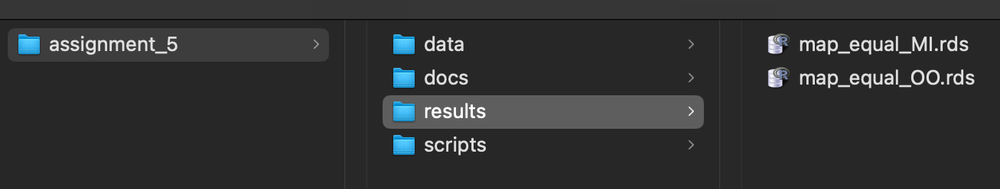

Class 5 Assignment: Choropleth Mapping with NYC Census Tracts.
Fall 2025 | Instructor: Stephen Metts | PGUD 5160 - CRN 2247
Preamble
In this fifth week’s assignment, we will utilize some of the scripting framework of Class 5 lab to develop an R Markdown report that features a comparative analysis across two ACS variables within one NYC Community District at the US Census Tract geographic level.
Follow the sequence of steps below to first orient to this week’s content: lecture, materials and weekly reading(s). Once complete, move along to first processing script #1 and script #2, then develop the R Markdown deliverable. The assignment deliverable is due Thursday, October 2nd, 2025 at 11:59pm.
Week 5 Class 5 Materials:
Week 5 Class 5 Reading:
The following online guide article from Axis Maps covers the basics of choropleth mapping - Axis Maps Choropleth Guide. Next week’s quiz 5 will focus on the content of this guide article, with 5 multiple choice questions, and 5 True or False questions.
At 7am Friday, October 3rd, the fifth weekly quiz will open in Canvas. Utilize the posted Class 6 Agenda to gain the quiz access code which will be posted towards the beginning of the agenda. Expect 10 questions in total that cover the reading above.
Class 5 Assignment:
Step 1:
Similar to how we started our assignment_5 project directory (this is a repeat of the previous week setups), we will first simply copy/paste the lab_5 directory at the desktop and name the new copied directory assignment_5. Remove all the data and results from assignment_5 that came from the copy of lab_5; we will start fresh in this assignment with the two script options to pull the necessary census data and transform it to the data frame that will will need for our data analysis and visualization.
Create a new R project; utilize an Existing Directory and point it to the just copied assignment_5 folder:

Run the standard getwd() before beginning assignment_5, ensuring you are within the newly created assignment_5 project directory.
Also, utilize the list.files() function to show all data paths and documents;
Like previous assignments, we will again be adapting and delivering a R Markdown File as the assignment_5 deliverable.
Step 2:
To start working on assignment_5, download the assignment script #1 and #2 and place them in the /scripts subdirectory:
In the first script, like lab_5, the target variable is as follows:
"B19013_001" # Median household income (inflation-adjusted $)
B19013: This is the table ID for “Median Household Income in the Past 12 Months (in [data year] Inflation-Adjusted Dollars)”.
In the second script, like lab_5, the target variable is as follows:
"B25032_001" # total occupied units "B25032_002" # owner-occupied TOTAL
B25032: This is the table ID for “Tenure by Units in Structure”; Owner-Occupied Units are those that are also not Renter-Occupied/
Remember that .r scripts run in the Console environment are different than .Rmd code chunks which require both the data and libraries to be loaded explicitly in the .Rmd document. Make sure to first run the scripts, produce the data, save the data, then reload the data into your final .Rmd document after working through the two assignment scripts.
Step 3:
Start with Class 5 Assignment scrip #1.
First load in the required libraries; these should already be installed from the lab_5 session. Next, set the path to the equivalency file that we have been using. Note that you may need to change the name of the .csv file in order for it to read into your session:
csv_path <- "~/Desktop/assignment_5/data/2020_Census_Tracts_to_2020_NTAs_and_CDTAs_Equivalency_20250903.csv"
CD_CT <- read.csv(csv_path)If you need to download a new copy of the equivalency file, you can access it here:
A backup copy is located as follows named 2020_Census_Tracts_to_2020_NTAs_and_CDTAs_Equivalency_20250903.csv. This version needs to be uncompressed before using in your scripts:
Next, you will need to REPLACE the current CDTACode == "MN03" with the community district of your choice for this assignment. For instance, BK01 would be used for Williamsburg-Greenpoint (CD 1 Equivalent):
tracts_id <- as.character(CD_CT$GEOID[CD_CT$CDTACode == "REPLACE THE CD REFERENCE CODE HERE"]) |>
stringr::str_pad(11, pad = "0")Work through the script sequentially from the tidycensus pull, processing the NA flags, producing and plotting the series of three maps. Evaluate the the three map classification options to determine which one best fits your chosen community district.
The assignment_5 script #1 and #2 are similar to those of lab_5 in that MN03 is the example target geography. Make sure that you indeed change reference to MN03 to your respective NYC community district code so that your final maps are not MN03 but rater your chosen CD code. You need to do this early in the script, and also in the final ggplot title.
Step 4:
Following your choice of classification method (Equal Interval, Quantile or Natural Breaks) for your chosen community district, save and export your ggplot object. Per the script, this will be one of the following:
map_equal_MImap_quant_MImap_jenks_MI
In past assignments, we have been saving data object prior to visualization. Here we will save the plot itself as an object, allowing us to read it into the .Rmd deliverable after processing the data within the script itself.
The following code snippet (also located at the end of script #1) saves and exports to the /results subdirectory the first map_equal_MI:
Step 5:
Script #1 can now be closed, and script #2 can be loaded into the working session:
Start with Class 5 Assignment scrip #2.
As script #1 resulted in the load of the equivalency file, once script #2 is loaded, the only adjustment that needs to take place is the choice and placement of the replacement community district. Again, we are using MN03 as the example placeholder in both scripts; these need to be replaced with a single, consistent community district across both scripts #1 and #2.
Work through the sequence of script #2, resulting in the three map classification methods. However, in script #2, it makes sense to stick with the method that was chosen in script #1. This isn’t mandatory, but it makes sense for consistency unless there is a specific reason to break the consistent method approach.
The following code snippet (also located at the end of script #2) saves and exports to the /results subdirectory the first map_equal_OO:
In the end, you should have two new .rds files located in the /results subdirectory:

.rds prior to working in assignment_5 .RmdClass 5 Assignment - Develop .Rmd Submission
From within your assignment_5 project, navigate to the docs folder. This is the location in which you will first download the example R Markdown file (.Rmd), and open it anew in your project. Alternatively, you can create your own R Markdown file, but the download version has some formatting set up that can be a helpful start point (as was the case for previous assignment starter .Rmd files).
To open an existing R Markdown file:
File > Open File > assignment_5 > docs > assignment_5.Rmd
To create your own R Markdown file:
File > New File > R Markdown
Next, loading, working with and saving data in the Console is NOT the same as loading, displaying and plotting data in an .Rmd file. Keep in mind that the Console is the iterative, working environment, whereas .Rmd is designed for publishing and sharing your analysis results.
So, the first step following the completion of accessing, transformation, plotting and saving both the median income and owner-occupied variable instances is to load necessary libraries and saved .rds objects within the .Rmd environment.
We load the data as follows from within the .Rmd document. Utilize the green run button to the far right of the code block to execute the code:
# Load the saved ggplot object
map_equal_MI <- readRDS("~/Desktop/assignment_5/results/map_equal_MI.rds")
# Display the loaded plot
print(map_equal_MI)# Load the saved ggplot object
map_equal_OO <- readRDS("~/Desktop/assignment_5/results/map_equal_OO.rds")
# Display the loaded plot
print(map_equal_OO)A placeholder code chunk for each of these sections is located in the starter .Rmd.
Make sure to load in your required libraries at the top of the script, and if needed you can reset your API key, although its unlikely you would need to do this as we set the key to install = TRUE for ongoing usage in your R installation.
As you finalize your code and bring it into your .Rmd submission document, all components - the libraries, the data object and the plotting code - need to exist in the .Rmd environment as it operates separate of your Console environment.
For your contextual writing and observations consider the following prompts:
- What classification method did you use for your chosen community district; and what was the primary reason(s) of its choice over the other two methods available?
- Did you find a strong, weak or neutral visible correlative relationship between median income and owner-occupied units?
- Based on further research or personal experience, can you contextualize your findings to the actual built environment in your chosen community district?
- What factor(s) could be driving both the high and low median income tracts; and further, the pattern in the owner-occupied rates across the tracts?
The assignment 5 submission is due to Canvas on Thursday, October 2nd, 2025 at 11:59pm. The format can be either the .html document format generated from your Rmd document, or the PDF format.
Note that when you knit your output, the .Rmd should not be removed; that is, keep it in your assignment folder in addition to the final .html or .pdf submission.
The Assignment 5 R Markdown deliverable is due to Canvas on Thursday, October 2nd, 2025 at 11:59pm.